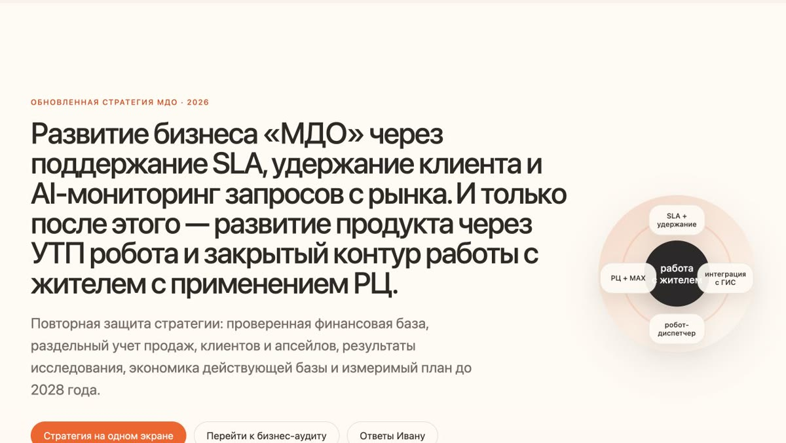

Личное
Кто я вне работы?
В свободное время езжу на велосипеде, путешествую по Уралу и слежу за новыми AI-технологиями и проектами. Спорт и поездки помогают переключиться после рабочей недели.
Product Lead · B2B SaaS · от исследования до выручки
Перед запуском нового продукта провожу интервью и разбираю рабочий процесс клиента. AI помогает систематизировать материал, а я выбираю сегмент, формулирую конкурентное преимущество, обсуждаю решение с командой и руководством, собираю MVP и запускаю пилоты. Масштабирую гипотезу после подтверждения спроса.
01 / Рабочий цикл
AI-автоматизации отслеживают конкурентов, изменения законодательства и запросы рынка.
Изучаю бизнес-процесс клиента, затем выбираю сегмент и формулирую УТП.
Сверяю ценность, ограничения, экономику и готовность команды к запуску.
Проверяю решение на реальных клиентах и заранее фиксирую критерии успеха.
Передаю подтверждённое предложение в продажи и развиваю продукт по данным внедрения.
Личное
В свободное время езжу на велосипеде, путешествую по Уралу и слежу за новыми AI-технологиями и проектами. Спорт и поездки помогают переключиться после рабочей недели.
02 / Текущий проект
Разобрал работу ЖКХ-компании на уровне директора, лица, влияющего на решение, и линейного сотрудника и собрал продукт вокруг ежедневных задач по работе с жителем. Главное УТП: голосовой диспетчер, который полностью снимает с сотрудника отдельные операции и берёт на себя приём заявок и показаний. Приложение, диспетчерская и Расчётный центр образуют закрытый сервисный контур: от обращения и показаний до начисления, квитанции и оплаты ЖКУ.
Опыт до МДО
Эти этапы дали мне P&L-мышление и привычку закрывать гипотезу, если рынок её не подтверждает.
Развивал Ozon и Wildberries, открыл магазин и пункт выдачи. Отвечал за ассортимент, рекламу, логистику, unit economics и P&L, затем продал работающий бизнес.
Создал сервис локальных услуг для жилых комплексов, собрал MVP и проверил модель с застройщиками, управляющими компаниями и партнёрами. Остановил проект, когда пилоты не подтвердили готовность УК платить за дополнительный процесс.
03 / Руководитель продукта · «Мой Дом Онлайн»
Исследование рынка и выбор ICP
Провёл 22 интервью и проверил около шести гипотез, чтобы понять процессы нового для меня рынка. Самым платежеспособным из изученных сегментов оказались сервисные УК: они улучшают обслуживание жителей, инвестируют в автоматизацию и развивают продукт своими запросами.
Сервисные УК стали основным ICP. Я выделил робота-диспетчера как действующее конкурентное преимущество и направил развитие МДО на задачи этого сегмента. Требования сервисной компании задают высокий стандарт продукта, который подходит и обычным управляющим организациям.
Marketplace услуг от УК
В момент выбора ICP управляющие компании развивали платные услуги для жителей: повышали качество сервиса и получали дополнительный доход. Я создал модуль, через который УК размещает свои и партнёрские услуги внутри приложения жителя. Он показал клиенту, за что тот платит в сервисном тарифе, и дал новый повод выходить к сервисным УК.
Собрал три пилотные организации и лично закрыл одну допродажу действующему клиенту. За два месяца пилот подтвердил ценность функции для сервисного тарифа, но не подтвердил отдельную модель монетизации.
Клиент с чеком около 18 тыс. ₽ перешёл на 45 тыс. ₽ в месяц и подключил весь функционал тарифа «Эксплуатация». Marketplace услуг стал поводом для перехода.
Суммы округлены и показывают один пример upsell. Marketplace не продавался отдельным продуктом.
Новый продукт · 0 → MVP → первая продажа
Гипотеза пришла из разговоров отдела продаж: без начислений и квитанций МДО закрывал только часть работы с жителем. Я проверил спрос, выбрал собственную разработку и собрал пилотную программу, которая ведёт клиента от первого предложения до персонального коммерческого решения.
Провёл около 10 интервью с клиентами и внешними экспертами, ещё 7 интервью с расчётчиками и бухгалтерами. Добавил контрольную закупку и реверс-инжиниринг решений конкурентов.
Выбрал собственную разработку, согласовал ЧТЗ, подрядчика 66bit и критерии приёмки. Перевёл реальные кейсы перерасчётов, льгот, миграции и региональных правил в требования.
Сначала искал пилоты сам, затем вместе с РОПом подключил отдельного менеджера. После его предложения я провожу каждый технический созвон и готовлю персональное коммерческое предложение.
За два месяца команда прошла 176 компаний: 80 получили попытку контакта, 73 дошли до содержательного разговора, а 19 дошли до технического созвона. Получили 2 продажи с суммарным MRR 18 тыс. ₽.
Операционный срез воронки на 16.07.2026; MRR указан по двум подтверждённым продажам.
Биллинг · 10 000 ЛС55K + 150K = 205K ₽ MRRитоговый MRR клиента растёт в 3,7 раза
Расчёты под ключ · 10 000 ЛС55K + 400K = 455K ₽ MRRитоговый MRR клиента растёт в 8,3 раза
Расчёт сравнивает два взаимоисключающих варианта с диспетчерской за 5,5 ₽. Он не учитывает скидки, себестоимость расчётов и темп подключения.
Интеграция · рост аудитории и выручки
В конце 2025 года домовые чаты в MAX создали для управляющих компаний ещё один канал, который сотрудники обрабатывали отдельно. Я предложил интеграцию: сообщения из MAX поступают в диспетчерскую МДО, где команда УК регистрирует обращения, назначает исполнителей и контролирует сроки в одном окне.
Интеграция разгружает сотрудников УК и помогает МДО наращивать аудиторию мобильного приложения. При подключении 50% текущей базы потенциал составляет 78 компаний × 24 000 ₽ в год = 1,872 млн ₽ ARR. Оценка аудитории: до 200 тыс. пользователей против текущих 30 тыс.
Потенциальный эффект рассчитан по текущей базе из 156 клиентов. Это сценарная оценка, а не полученная выручка или достигнутый размер аудитории.
Рост ARR78 × 24 000 ₽1,872 млн ₽ потенциального ARR при подключении 50% базы
Рост пользователей30K → 200Kдо 170 тыс. новых пользователей в сценарии интеграции
90% отражают интерес в разговорах с клиентами; около 10% показывают текущую готовность к внедрению. ARR и 200 тыс. пользователей остаются сценариями, а не достигнутым результатом.
Исследование 2026 · стратегия продукта
За полтора месяца провёл 22 глубоких интервью с действующими и ушедшими клиентами, несостоявшимися покупателями, потенциальными клиентами, директорами сервисных УК и сотрудниками конкурентов. Сверил выводы с CRM, поддержкой и использованием продукта. AI помог сгруппировать материал; я проверил ключевые сигналы, обсудил выводы с командой и приоритизировал два направления.
УК выполняют одни и те же операции в МДО и ГИС ЖКХ. Если сохранить разрыв, в горизонте пяти лет продукт может потерять часть ценности. Команда реализует интеграцию, чтобы обращения из государственной системы попадали в рабочий контур МДО.
В разработкеТекущему роботу не хватает контекста конкретной УК. Развиваем AI-диспетчера, который знает процессы клиента, принимает рутинные обращения и передаёт сложные или аварийные случаи сотруднику.
В разработке
Открыть презентацию ↗Стратегический артефакт · 2026–2028
Сверил план и факт по выручке, продажам, оттоку и P&L; объединил 22 интервью с данными CRM, поддержки и продукта; разложил развитие на четыре этапа: SLA и удержание, завершение пилотов РЦ, MAX и ГИС ЖКХ, развитие Voice AI и масштабирование только подтверждённых направлений.
04 / Как я провожу исследования
До разговора формулирую скрытые гипотезы и собираю контрастные группы респондентов. После интервью сверяю слова с поведением, CRM, поддержкой и SQL. AI ускоряет расшифровку и группировку, но вывод я принимаю после проверки исходных фрагментов.
Моя техника интервью
Собираю противоположные группы: лояльные, ушедшие, не купившие, клиенты конкурентов и отраслевые специалисты.
Заранее формулирую 5–6 скрытых гипотез, но не подсказываю их респонденту вопросами.
Прошу восстановить последний реальный кейс: кто начал процесс, где возникла ручная работа, что стоило денег и кто принял решение.
Сверяю слова с поведением, данными CRM, поддержки, SQL и готовностью платить. Противоречивые кейсы не усредняю.
AI расшифровывает и группирует материал; сам переслушиваю ключевые фрагменты и переношу в стратегию только повторяющиеся сигналы со ссылкой на источник.
05 / Как я работаю с командой
В основном рабочем контуре находятся отдел продаж, техническая поддержка и интеграции, разработка и внешний подрядчик. Финансы и юристы подключаются к решениям по экономике и договорам. На встречах фиксируем решение, ответственного и срок; метрики показывают, где команда теряет выручку, качество сервиса или активность клиента.
Разобрать текущие клиентские проблемы, блокеры delivery, состояние воронки и решения, которые нельзя откладывать до отчётного периода.
Приоритет, ответственный и срокСравнить план и факт по выручке, payback, SLA, доступности продукта, churn и поведению клиентов.
Изменение процесса или roadmapПроверить продуктовую стратегию, P&L, портфель инициатив и доступный ресурс команды.
Фокус квартала и stop/go решенияПонимаем, какие продукты и каналы возвращают затраты, где воронка буксует и что нужно изменить в предложении.
Смотрим скорость и качество ответа, причины просрочек и клиентов, у которых проблемы с сервисом могут перейти в риск ухода.
Контролируем фактическую доступность ключевых продуктов и отклонения от обещанного клиентам уровня сервиса.
SQL-выгрузки отмечают падение потока заявок, робота или диспетчерской на 20%+ к среднему за предыдущие три месяца. Команда связывается с клиентом до отказа.
06 / Как AI усиливает мою продуктовую работу
AI берёт расшифровку, поиск и первичную классификацию. Я проверяю исходный звонок, сделку или материал и решаю, какой сигнал попадёт в продуктовую стратегию. Рабочие сценарии передаю отделу продаж и другим функциям.
AI-автоматизация
Система ежедневно разбирает звонки и сделки Bitrix24, собирает отчёт по менеджерам и предлагает продуктовые сигналы. Я могу открыть сделку, прослушать запись и вручную решить, попадёт ли сигнал в базу гипотез. Сейчас в обработанной базе 1 501 уникальный звонок и 290 клиентских профилей.
Создал MCP к hh.ru и Telegram-бота. Через него нахожу специалистов ЖКХ для интервью; отдел агентских продаж использует тот же инструмент для поиска кандидатов в партнёрскую сеть.
Парсеры ежедневно ищут закупки по голосовым роботам, диспетчеризации и ГИС ЖКХ, очищают шум и присылают релевантные карточки в Telegram.
Система сохраняет версии 15 сайтов, находит изменения в продуктах, тарифах и позиционировании, классифицирует их и отправляет ежедневную сводку.
Раз в две недели собираю обсуждения из отраслевых и «подслушанных» каналов ЖКХ, выбираю повторяющиеся проблемы и готовлю статьи с AI. Перед публикацией сам проверяю факты и профессиональную точность.
07 / Следующий шаг
Мне интересны SaaS и PropTech, голосовые и AI-продукты, сервисы для социального взаимодействия и планирования. В таких продуктах команда изучает процесс клиента и собирает из него работающую систему.